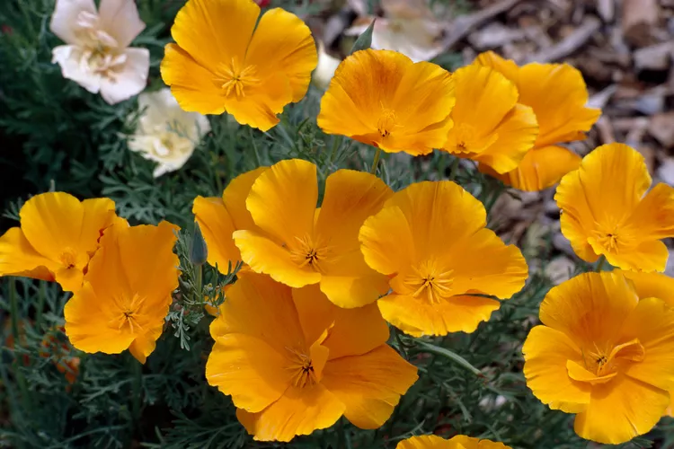

Types of Flowers Native to California
These are some of the most popular flowers native to California.
1. California Poppy

photo from BetterHomes&Gardens
- The California poppy is the official state flower of California.
- It's a bright orange flower that grows 12 to 24 inches tall.
For more information click here
2. Baby White Eyes Flower

photo from The Watershed Nursery
- The baby white eyes is a variant of the baby blue eyes.
- This white flower grows under 6 to 12 inches tall, and spreads 12 to 15 inches wide.
For more information click here
3. Arroyo Lupine

photo from Bulk Wildflowers
- The arroyo lupine is a native California wildflower.
- These vibrant blue, purple, or lavender-colored flowers grow 1 to 4 feet tall.
For more information click here